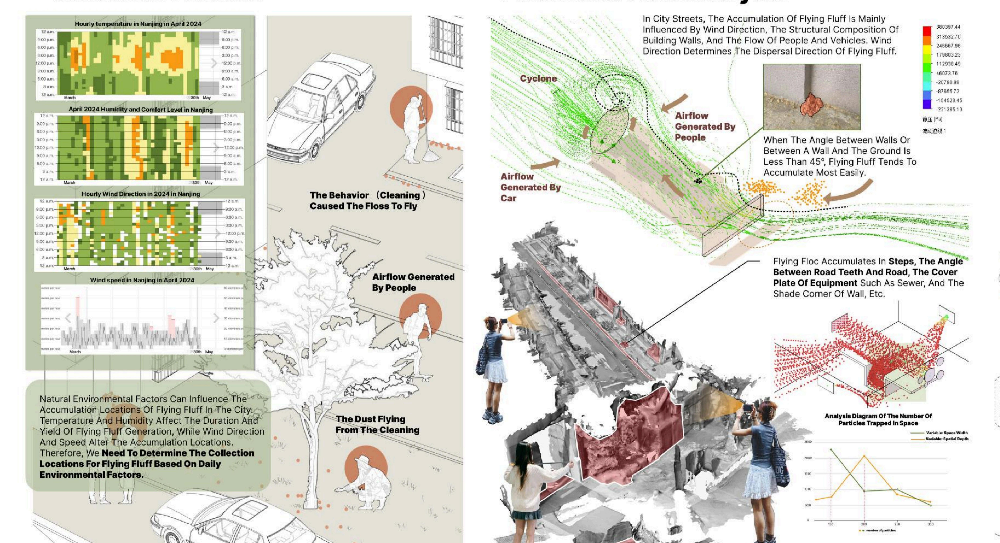

ECO-FLUFF
opportunities

In modern urban ecosystems, the rhythm of plant lifecycles has been disrupted, and in some cases, plants are directly severed or removed by the city. Plant functional organs such as fallen leaves, pollen, flowers, and seeds have brought numerous irreconcilable harmful effects to residents' lives, leading them to often be regarded as “waste” and discarded in urban areas. This project transforms the flying fluff produced by plane trees, poplars, and willows—which have lost their original cyclical functions in the urban ecological environment—into biodegradable biomaterials and structures through chemical technologies. The adhesives used in these biomaterials are also derived from plant fibre extracts obtained from the flying fluff. The resulting biodegradable bio-bricks can be used for the restoration of heavy metal-contaminated soils. This approach addresses both the issue of soil restoration in cities and the nuisance caused by flying fluff to residents' lives. Additionally, I have customised an intelligent management platform for this project. This platform aims to provide more efficient and user-friendly operational models for relevant industries, thereby promoting the sustainable development and meticulous management of environmental management-related sectors.
research

I conducted a soil pollution survey of industrial plants in Nanjing and found that the locations of these heavily polluted factories were exactly opposite to the locations where sycamore trees (梧桐) grow. The areas where sycamore trees grow luxuriantly affect the deposition of harmful substances in the soil.
my plan
By utilizing the analysis of airborne fluid particle agglomeration, fly ash collection bins can be set up in densely populated areas of urban sycamore trees to collect fly ash in the most efficient way. Many environmental factors can affect the efficiency of catkin dispersal and collection, so information needs to be collected and analyzed in advance.
experiments

Chemical experiments were used to dissolve, extract, and fabricate this sustainable biomaterial brick. The structural model with the largest surface area was selected as the final structure for the biomaterial, maximizing the absorption and dissolution of harmful substances in the soil through structural pores.